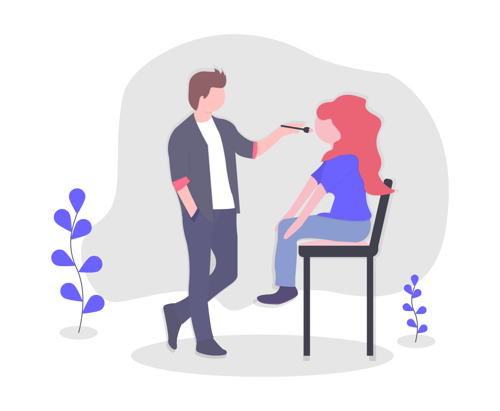

Beauty In Tech
September 28, 2021 by Tiphani Campbell
Ever wondered how two multi-billion dollar industries can come together?
And why they should? Through apps of course. Carefully designed apps that
can cater to most, if not all, your beauty needs. Need skin care advice -
take a special quiz that could give recommendations for products and even have
live sessions with certified dermatologists.

Want new makeup but don't know
which products to buy? Makeup quizzes to generate preferences and product recommendations
and Augmented Reality to try on products without going to the actual store.
Very convenient for consumers and brand owners have more reach - come on
who doesn't have a smartphone these days!